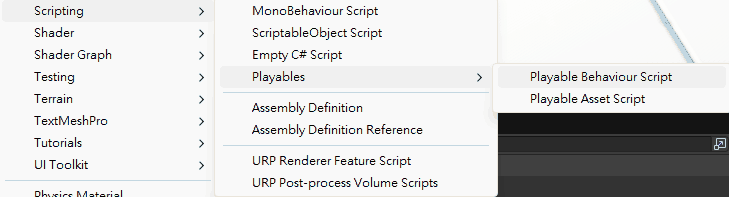

ch1_8 建立 Script
建立 C# Script Asset，將它掛到 GameObject 上成為 Component，並看懂 Unity 6 在 Scripting 選單中提供的不同腳本範本。
腳本檔存在，不代表它已經在場景中執行
Script 先是 Project 裡的 Asset；掛載到 GameObject 後，才會成為該物件的 Component。直接按 Play 卻沒有任何反應，通常只是因為腳本還孤零零地躺在 Assets 裡。
方法一：在 Project 建立 C# Script
- 01建立 Scripts 資料夾
在 Project 視窗的 Assets 空白處按右鍵，選擇 Create → Folder，命名為
Scripts。 - 02建立 MonoBehaviour Script
進入 Scripts 資料夾，在空白處按右鍵，選擇 Create → Scripting → MonoBehaviour Script。這就是目前課程要使用的普通 GameObject 行為腳本。
- 03立即正確命名
例如
TestOne。課程特別提醒命名要正確，避免之後再修改時增加麻煩。 - 04雙擊開啟程式碼編輯器
老師示範撰寫旋轉程式，但本堂重點是建立與掛載流程，程式語法會在後續章節說明。
Unity 6 的 Scripting 選單在建立什麼

- MonoBehaviour Script
- 建立繼承
MonoBehaviour的腳本，可掛到 GameObject 上成為 Component。角色移動、互動、敵人 AI 與一般場景行為通常從這裡開始。本堂選這個。 - ScriptableObject Script
- 建立繼承
ScriptableObject的資料型腳本，常用來製作物品、角色數值、技能設定等可重複使用的資料 Asset。它不是一般的 GameObject 行為元件。 - Empty C# Script
- 建立不預設繼承 Unity 類別的普通 C# 檔案，適合資料模型、工具類別、服務或純邏輯程式。因為沒有繼承
MonoBehaviour，不能直接拖到 GameObject 當 Component。 - Playable Behaviour Script
- 建立自訂
PlayableBehaviour，用於 PlayableGraph 或 Timeline 執行期間的自訂行為。這是動畫、音訊與 Timeline 等進階流程，不是普通角色控制腳本。 - Playable Asset Script
- 建立描述自訂 Playable 資產的腳本，負責在 PlayableGraph 中建立可播放內容，常與自訂 Timeline Clip 或 Track 搭配。
- Assembly Definition
- 建立
.asmdef，把所在資料夾及其子資料夾的腳本編譯成獨立程序集。大型專案可藉此拆分模組、控制引用與縮小重新編譯範圍；這個基礎課程暫時不需要。 - Assembly Definition Reference
- 建立
.asmref，讓目前資料夾的腳本加入既有 Assembly Definition 所定義的程序集，不必在每個資料夾再放一份新的.asmdef。 - URP Renderer Feature Script
- 為 Universal Render Pipeline 建立自訂 Renderer Feature 範本，用來插入自訂 Render Pass 或畫面渲染效果。屬於圖形管線進階內容。
- URP Post-process Volume Scripts
- 建立自訂 URP 後製效果需要的範本，通常包含 Renderer Feature 與 Volume Component 相關腳本，讓效果能透過 Volume 系統調整。
把 Script 掛到 GameObject
只在 Project 建立 Script，按 Play 不會讓任何場景物件自動執行它。必須先把腳本附加到目標 GameObject。
- 01選取 GameObject
在 Hierarchy 或 Scene 選取要控制的 Cube。
- 02找到 Script Asset
在 Project 的 Scripts 資料夾選取剛建立的 MonoBehaviour Script。
- 03拖到 Inspector
把 Script 拖進該 GameObject 的 Inspector。掛載成功後，Inspector 會出現腳本 Component。
- 04按 Play 測試
老師示範掛載後物件開始旋轉，用來確認腳本確實有執行。
方法二：從 Add Component 建立新腳本
- 01選取 GameObject
先選取要附加腳本的物件。
- 02開啟 Add Component
在 Inspector 底部點選 Add Component。
- 03建立 New Script
從選單建立新腳本並輸入名稱。建立完成後，腳本會直接掛到目前 GameObject。
- 04整理檔案位置
這種方式建立的 Script 可能不在預先規劃的 Scripts 資料夾，需要回到 Project 手動移動整理。
兩種建立方式的差異
- Project → Create → Scripting → MonoBehaviour Script
- 可直接指定腳本所在資料夾，專案結構較整齊；建立後還要手動掛到 GameObject。
- Add Component → New Script
- 建立後立即掛到目前 GameObject，操作較快；之後可能還要移動 Script Asset 整理資料夾。
- 刪除資料夾或腳本
- 可在 Project 右鍵選擇 Delete，但刪除 Asset 會影響所有引用它的物件，不能把它當普通場景物件隨意處理。